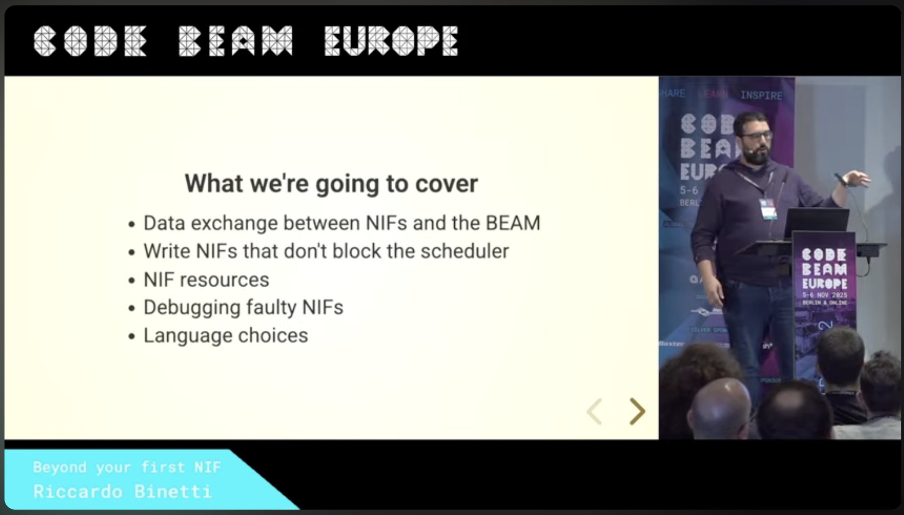

Don't Crash
Safe interop with Ports and C Nodes
Riccardo Binetti · rbino.com/about
00:00-00:05
Greet, then advance to last year's talk.
In the previous episode…

00:05-00:40
Last year at Code BEAM: Beyond your first NIF. Safer NIFs: scheduling, resources, debugging.
Today: fewer surprises at the native boundary. Goal: choose where the crash happens.
Dirty does not mean isolated
BEAM OS process
Elixir
NIF
dirty scheduler
One address space. One crash boundary.
00:40-01:30
NIF, dirty scheduler, and native thread still share the BEAM OS process.
Dirty scheduling protects scheduler responsiveness, not the address space.
A supervisor cannot restart a VM that vanished.
Move the boundary
A native crash becomes an observable failure.
01:30-02:15
Move C outside the BEAM process boundary.
A segfault kills the worker; Elixir can observe and recover.
Isolation does not fix correctness, memory, or CPU use. It creates a communication problem.
whoami
Riccardo Binetti
rbino.com/about
Elixir since 2017
Messing with native interop
Elixir on one side. Some C on the other. Sorry.
02:15-02:35
Brief introduction: Riccardo Binetti; find me at rbino.com/about.
Elixir has been my main language since 2017.
The examples use Elixir on the BEAM side and C on the native side.
Two ways to talk
C Nodes
executable + distribution
Requests? Death? Overload?
02:35-03:00
Build the talk: Ports first, then C Nodes.
For both, ask how requests, death, and overload work.
One extremely exciting worker
checksum("123456789")
# => 3421780262
delay slow work on purpose crash SIGSEGV on purpose
03:00-03:40
Use the same checksum operation behind both interfaces.
CRC is deliberately trivial; Erlang already provides it.
Reveal delay and crash as deliberate controls for the failure scenarios.
Ports
executable + pipes
03:40-03:45
Section title. Ports first: launch an executable and talk through pipes.
What is a Port?
connected processElixir / Erlang
↔
PortBEAM object
↔
external programOS process
A BEAM-managed endpoint for byte-oriented communication.
Here: external Port programs, not linked-in drivers.
03:45-04:05
A Port is a BEAM object connecting one BEAM process to an external resource.
In this talk, that resource is a separate executable reached through byte streams.
The process attached to the Port is its connected process and receives Port messages.
Linked-in Port drivers are different: they run inside the VM and do not provide this crash boundary.
Open a Port
port =
Port.open({:spawn_executable, executable()}, [
:binary,
:exit_status,
packet: 4,
args: ["--port"]
])The calling process becomes the Port's connected process.
04:05-04:35
Highlight spawn_executable, then the options.
{:spawn_executable, path}: runs that file directly, without a shell or a PATH search (use System.find_executable/1). {:spawn, command} splits on spaces, may invoke the shell, and starts a linked-in driver if one has that name.:binary: data arrives as binaries, not lists of bytes.:exit_status: when the program exits, the owner gets {port, {:exit_status, status}}. A signal shows as 128 + signal, so a segfault is 139.packet: 4: the BEAM adds a 4-byte big-endian length to every command and strips it from replies, so each {:data, data} message is one complete packet.args: each list element becomes one argv entry, with no shell expansion. Only valid with spawn_executable.Other useful options, if asked:
cd: dir: working directory for the program.env: [{~c"NAME", ~c"value"}]: extends the program's environment.line: n: line-based framing instead of packets; messages are {:eol, line} or {:noeol, chunk}.:eof: the Port stays open at end of file and sends {port, :eof} instead of closing.:stderr_to_stdout: merges stderr into the protocol stream. Avoid with packet framing.:nouse_stdio: protocol on fds 3 and 4, leaving stdout free.busy_limits_port: {low, high}: when the Port's output queue counts as busy. Defaults 4096 and 8192 bytes.
A pipe is not a mailbox
request A request B
↓
part A rest A + part B rest B
61 62 63
4-byte big-endian length + payload
04:35-05:30
Pipes carry byte streams, not messages.
One write can become partial reads or be combined with another write.
packet: 4 adds the length on the way out and strips it on the way in. C must fully read header and payload, and write its own header before every reply.
Framing and encoding are different jobs
ETF payload
request = {:checksum, 42, 0, "123456789"}
packet = :erlang.term_to_binary(request)
Port.command(port, packet)operation · ID · delay · bytes
05:30-06:25
Framing finds message boundaries; ETF gives the bytes meaning.
Do not add the length in Elixir; the Port option does it.
Port.command sends now. The result arrives later as a message.
ei already helps here
ETF ⇄ ei_decode_*ei_x_encode_*⇄ C values
ETF does not require distribution.
06:25-07:15
ei can decode and encode ETF without a C Node.Validate frame size and tuple shape before doing work.
Both sides must agree on one small protocol.
Make it look like an Elixir call
def handle_call(request, from, state) do
# ...send the request to C...
timer = Process.send_after(
self(), {:deadline, id}, timeout
)
{:noreply,
%{state | pending: %{id: id,
from: from, timer: timer}}}
enddef handle_info({port, {:data, data}}, state) do
# ...decode, match the pending ID...
Process.cancel_timer(timer)
GenServer.reply(from, result)
{:noreply, %{state | pending: nil}}
end
Keep the caller. Reply when the Port answers.
07:15-08:15
First show retaining from; then reveal the reply path.
handle_call: send, store ID/caller/timer, return :noreply.handle_info: match ID, cancel timer, call GenServer.reply.Only one pending request; no hidden queue.
Your printf is now a protocol violation
stdoutprotocol
stderrdiagnostics
Do not merge them.
Or free stdout: :nouse_stdio moves the protocol to fds 3 and 4.
08:15-09:00
stdout belongs exclusively to the protocol.A debug printf can corrupt packet framing.
Use read/write; send diagnostics to stderr and never merge it back.
Build: :nouse_stdio moves the protocol to fds 3 and 4. Our worker uses stdio; with this option the C side would read fd 3 and write fd 4.
Three things, three lifetimes
Supervisor
→
ownerElixir process
→
PortBEAM object
→
executableOS process
Open is not application-ready.
09:00-09:45
Distinguish the owner process, Port object, and OS executable.
The supervisor manages the owner; the owner opens the Port.
Reveal the callout: the owner waits for an application-level startup hello; an open Port only proves the channel exists.
When C crashes
BEAM OS process Native OS process
Supervisor
Owner✕
Port✕
C worker (pid 42) C worker (pid 43) ✕
✕ Native crash The worker dies. The BEAM stays alive.
exit status The Port closes itself. The owner fails the caller, then stops.
restart owner New owner opens a new Port and C worker
fresh checksum request successful result
The failed request is reported, not replayed.
09:45-10:35
Start with the Supervisor, owner, Port, and native worker alive.
Next: C segfaults; the BEAM process survives.
Next: the Port sends the exit status and closes itself; the owner fails the pending caller, then stops.
Next: the surviving Supervisor restarts the owner, which opens a new Port and native worker. OS PIDs 42 and 43 are illustrative, not recorded output.
Next: a fresh checksum succeeds. This is not a retry of the failed request.
Handle the Port exit
def handle_info({port, {:exit_status, status}}, %{port: port} = state),
do: fail(state, {:native_exit, status})The failed operation is not replayed.
10:35-10:55
The owner traps exits, handles the Port's exit status, resolves pending work, then stops.
Exit status describes the executable; the Port exit signal describes the Port lifetime.
Report the failed operation. Do not silently replay it.
Now kill the other side
BEAM exits
✕
native worker still running?
That is an orphan process.
10:55-11:40
Reverse the failure: the owner or whole BEAM disappears.
Closed channels do not universally terminate an executable.
The native program must notice and enforce shutdown, or an orphan can remain.
Who is reading EOF?
BEAM OS process Native OS process
Owner✕
Port✕
C worker (single thread)
checksum request ⟶ 60-second native work begins
✕ Kill owner C keeps computing
Port closes ⟶ stdin EOF EOF is available, but C is not reading
Still computing The old worker remains alive until it notices the closed channel
EOF only helps when someone reads it.
11:40-12:40
Counterexample: a single-threaded worker reads a request, then blocks in slow native work.
Next: kill the owner.
Next: the Port closes and stdin reaches EOF, but EOF does not interrupt computation.
Next: the old C worker is still alive. It may notice the closed channel on a later read or write; prompt shutdown is not guaranteed.
This is a conceptual failure case, not the example's implementation. Ask who can keep listening while computation runs, then advance to the reader-thread solution.
Keep someone listening
native OS process
reader threadstdin / EOF
compute threadnative work
pthread_t thread;
pthread_create(&thread, NULL, compute, NULL);
int result = read_request(&next);
if (result == 0) _Exit(0);
if (result < 0) fatal("invalid input");
Responsive communication, not isolation between threads.
12:40-13:20
Answer the previous slide's question: show the two-thread diagram, then the EOF code.
The reader stays on stdin while the compute thread works.
EOF calls _Exit, ending the whole executable promptly.
Threads improve responsiveness, not crash isolation. Child processes need broader policy.
When the owner dies
BEAM OS process Native OS process
Supervisor
Owner✕
Port✕
C worker (pid 42) C worker (pid 43)
slow checksum request
✕ Kill owner Pending caller gets :unavailable
Port closes, stdin EOF C reader notices, even while compute is busy
_Exit(0) ✕Whole native process exits, with no 60-second wait
restart owner New owner opens a new Port and C worker
Restart and old-worker cleanup can overlap.
13:20-14:05
Start with the checksum request: C is busy for 60 seconds. OS PIDs 42 and 43 are illustrative.
Next: kill the owner. The pending caller receives :unavailable.
Next: the Port closes; C's reader sees EOF independently of the compute thread.
Next: _Exit(0) ends the whole old worker promptly.
Next: show supervision replacing the owner, which opens a new Port and worker. This recovery path can run concurrently with old-worker cleanup; the presentation order is not a guaranteed runtime ordering.
When the BEAM dies
BEAM OS process Native OS process
Supervisor
Owner
Port
C worker (pid 42)
slow checksum request
✕ kill -KILL the BEAM Supervisor, owner, and Port vanish together. No Elixir code runs.
pipes close, stdin EOF Same reader thread, same EOF path as owner death
_Exit(0) ✕No orphan: the worker exits without the 60-second wait
Nothing in the BEAM survives to clean up.
14:05-14:35
Same slow request as on the owner-death slide. OS PID 42 is illustrative.
Next: SIGKILL the whole BEAM OS process. Supervisor, owner, and Port die together: no terminate/2, no exit-status handling, nothing left to restart.
Next: the pipes close; the same reader thread sees stdin EOF.
Next: _Exit(0) ends the worker promptly. No orphan process remains.
Cleanup without terminate/2
owner dies
Port closes
BEAM dies
pipes close
Closed input is the shutdown signal.
Can't change the program? Wrap it.
14:35-15:00
Summarize both diagrams: cleanup depends on EOF, not terminate/2.
_Exit skips graceful native cleanup; intentional for this stateless worker.Build: for a program you can't change, the Elixir Port docs give a bash wrapper that kills it when stdin closes. It takes over stdin, so it only fits programs you don't talk to through stdin.
Where does the waiting happen?
producers → owner mailbox → Port + pipes → C queue
Moving a queue does not bound it.
15:00-15:40
Work can wait in the mailbox, Port buffers, pipes, or C.
Moving a queue does not bound it.
Choose admission capacity and rejection behavior explicitly.
Transport pressure
if Port.command(state.port, packet, [:nosuspend]) do
# Track the request; wait for the reply
else
{:reply, {:error, :busy}, state}
endtrue means accepted by the transport, not completed by C.
15:40-16:30
Highlight :nosuspend, then the false path.
Port backpressure can suspend the sender and prevent owner callbacks.
Busy means the Port's output queue to the program reached its high limit: 8192 bytes by default, leaving busy below 4096 (busy_limits_port).
true means accepted by the Port, not started or completed by C.
A GenServer is not a bounded queue
when pending != nil,
do: {:reply, {:error, :busy}, state}inputs
|> Task.async_stream(
&checksum/1,
max_concurrency: 1
)
one work slot bounded producer
The mailbox is still unbounded.
16:30-17:20
Show the busy clause, then the unbounded-mailbox warning, then the bounded producer.
The owner rejects work only when it processes the call; its mailbox remains unbounded.
Task.async_stream bounds one producer, not the application.Transport pressure and admission control are separate.
Timeout is not cancel
def handle_info({:deadline, id}, %{pending: %{id: id}} = state) do
reply(state.pending, {:error, :timeout})
{:noreply, %{state | pending: %{state.pending | from: nil}}}
endcaller stopped waiting ≠ C stopped working
17:20-18:00
A timeout stops waiting; it does not stop C.
Reply to the caller, but retain the pending request ID without a caller.
Reject new work until the late reply drains or the worker fails.
When the caller stops waiting
BEAM OS process Native OS process
checksum: 800 ms work, 100 ms timeout
{:error, :timeout}The owner keeps the request ID: C is still working
next checksum {:error, :busy}
late reply Nobody is waiting for it. Only now can the next request run.
The slot frees when C replies, not when the caller gives up.
18:00-19:00
The Port is omitted: it only carries the bytes here. The caller asks for 800 ms of work and waits 100 ms.
Next: the owner replies {:error, :timeout} but keeps the request ID; C is still working.
Next: the next request gets {:error, :busy} at once: the single slot is still occupied.
Next: the late reply stops at the owner. It matches the old ID, nobody is waiting, so it is dropped. Only now is the slot free, and the next request succeeds.
If C never returns, the slot stays busy until the worker is replaced. Transition: same native work, now switch integration models.
C Nodes
executable + distribution
19:00-19:05
Section title. Same checksum; the executable now speaks Erlang distribution.
What is a C Node?
native OS process
ordinary C executable
ei · Erlang distribution
A distribution peer, not a BEAM runtime.
19:05-19:25
A C Node is an ordinary native executable that speaks Erlang distribution.
Once connected, ei provides node identity, the handshake, and message transport.
It can address Erlang processes and registered names as a distribution peer.
It does not contain the BEAM, schedulers, lightweight processes, or OTP.
Why a C Node?
A different integration model, not an upgrade from Ports.
19:25-19:45
Choose this model for an independently managed service that needs distribution.
The checksum stays the same; the transport changes.
Messages target a destination on another node.
This is a different model, not an upgraded Port.
Still a C program
ei supplieshandshake
we supply service behavior
No BEAM processes. No BEAM schedulers. No OTP supervision tree.
19:45-20:35
ei supplies handshake, ETF helpers, receive, and send.We supply service behavior, work slots, and failure policy.
This example has one peer, one slot, and registered name worker.
Speaking distribution does not put a BEAM or OTP runtime inside C.
epmd is the directory
C Node
epmdWhere is beam@localhost?
BEAM node
C Node ⟷ BEAM node
Discovery through epmd. Messages travel directly.
20:35-21:20
First show the C Node asking epmd; then reveal the direct connection.
epmd maps a node name to its distribution port.The handshake and messages use the direct peer connection.
Directory, not message broker.
Where did my node go?
Node.list() # []
Node.list(:hidden) # [:native@localhost]
:net_kernel.monitor_nodes(true, %{node_type: :hidden})Hidden is a topology property.
It is not a security property.
21:20-22:00
An ei C Node appears as a hidden node.
Use Node.list(:hidden) or another connected-node listing.
Third build: monitor_nodes reports only visible nodes by default. Without node_type: :hidden, the client would never see the C Node's nodedown.
Hidden connections do not join the visible transitive mesh.
Hidden is topology, not security.
Who starts C?
BEAM node
named node
C Node
ordinary executable
Elixir supervises its client. It does not start C.
22:00-22:45
The BEAM runs as a named node; the application supervises a small Elixir client for the C service.
The C Node is an ordinary executable that something outside the BEAM starts: a shell, systemd, a container.
Both sides share a cookie; what it does and doesn't protect comes later.
Elixir supervises its client, but it does not start C. That matters when C crashes.
Initialize, then connect
if (ei_init() < 0) fatal("ei_init failed");
ei_cnode node;
if (ei_connect_xinit(&node, "localhost", name, fullname,
&loopback, cookie, creation()) < 0)
fatal("cannot initialize node identity");
int fd = ei_connect_tmo(&node, peer, IO_TIMEOUT_MS);
if (fd < 0) fatal("connect failed");#include <ei.h> · link -lei from the active OTP install
22:45-23:40
Build through library init, node identity, then connect.
Call ei_init exactly once before any other ei call.
Outgoing mode supplies a non-zero creation for this incarnation.
_tmo limits each socket operation, not the whole attempt. ei performs the handshake.
Receive a message, not a function call
erlang_msg message;
int result = ei_xreceive_msg_tmo(fd, &message, &incoming,
IO_TIMEOUT_MS);
if (message.msgtype != ERL_REG_SEND ||
strcmp(message.toname, "worker") != 0) continue;
// Decode request; hand it to the compute thread
caller = message.from;Registered send to worker. Keep the sender PID.
23:40-24:20
Receive an encoded term plus distribution metadata.
Accept only ERL_REG_SEND addressed to worker.
Decode the same request shape as the Port example.
Retain message.from, the sending process PID, for the reply.
Reply to the caller
int result = ei_send_tmo(
fd, to, buf.buff, buf.index,
IO_TIMEOUT_MS
);
ei_x_free(&buf);send({:worker, target},
{:checksum, 42, 0,
"123456789"})
{:cnode_reply, c_pid,
{:result, 42, 3421780262}}
Distribution handles serialization and framing.
24:20-25:05
The compute thread produces the result; the communication thread sends it.
Distribution handles serialization and framing.
The reply carries the request ID and the C Node's Erlang PID, not its OS PID, to identify this incarnation.
Our application still defines correlation, busy behavior, and timeouts.
If you squint, a GenServer
request → work → reply
GenServer?
A familiar protocol is not an OTP runtime.
Same overload rules: one slot, :busy, :nosuspend.
25:05-25:55
Build request, work, reply; then ask "GenServer?"
A similar shape does not make GenServer.call compatible.
The Elixir GenServer is only a convenience client.
A distribution connection does not prove the application service is ready.
Last build: overload works as with the Port. One pending slot and :busy on both sides, timeouts that do not cancel, and :erlang.send(…, [:noconnect, :nosuspend]), which returns :nosuspend instead of suspending the client on a busy connection.
When work outlasts the tick time
BEAM OS process Native OS process
BEAM node
communication thread
compute thread
6-second checksum start work
tick ei answers4-second tick time: ticks keep arriving while compute is busy
result ready checksum result Still connected. Only the communication thread used the socket.
Ticks show a responsive connection, not progress on the work.
25:55-26:50
Introduce ticks: a peer silent for about the net tick time (3–5 s here, with a 4 s setting) is considered disconnected. The work takes 6 s.
"BEAM node" stands for both the Elixir client and the BEAM's distribution layer.
Next: ticks keep arriving; the communication thread is still receiving, so ei answers each one while compute is busy.
Next: compute signals completion; the communication thread sends the result. Still connected.
Keep servicing distribution
communication threadreceive · ticks · replies
compute threadslow work
if (result == ERL_TICK) {
continue; // ei already replied
}
26:50-27:20
The configured net tick time is four seconds, yet the connection survives.
The communication thread keeps receiving; ei answers ticks automatically.
The compute thread never writes distribution directly.
Or let the BEAM connect to C
int listener = ei_xlisten(&node, &loopback, &port, 4);
int publication = ei_publish_tmo(&node, port, IO_TIMEOUT_MS);
fd = ei_accept_tmo(&node, listener, &connection, IO_TIMEOUT_MS);listen → publish to epmd → accept peer
Keep the publication descriptor open.
27:20-28:00
Reveal listen, publish, then accept.
Reverse direction: the BEAM initiates with Node.connect.
Keep the publication descriptor open for the epmd registration.
Publication and message connection use separate descriptors; both paths share one service loop.
When the C Node crashes
BEAM OS process Native OS process Shell
Supervisor
Client
C Node (pid 42) C Node (pid 43)
Operator
checksum request
✕ Native crash The C Node exits. The BEAM stays alive.
nodedown Pending caller gets :disconnected. The client stays up, so nothing restarts.
start C again
fresh checksum request successful result
Supervising the client does not supervise C.
28:00-28:40
The client has a request pending on the C Node. OS PIDs 42 and 43 are illustrative; the Operator is whoever or whatever starts C: a person in a shell, systemd, a container.
Next: C crashes; the BEAM survives.
Next: nodedown. The client replies {:error, :disconnected} to the pending caller and stays alive, so its Supervisor has nothing to restart. It never started C either.
Next: the operator starts C again; the new C Node connects and sends its application hello.
Next: a fresh request succeeds. Contrast with the Port crash: there, supervision replaced the worker; here nothing does.
Who restarts C?
Supervising the client does not supervise an independently started executable.
Explicit restart is part of the lifecycle policy.
28:40-29:00
Nothing in the BEAM restarts independently launched C; whatever started it has to start it again.
Starting an external service is a separate lifecycle decision.
Exiting on socket failure is our policy, not an ei guarantee.
Disconnected is an observation
BEAM OS process Native OS process
request, ID 7
Operation succeeds Its side effect has already happened
reply The connection fails before the reply arrives
nodedown {:error, :disconnected}
Did it happen?
Request IDs correlate. They do not deduplicate.
29:00-30:00
Nodedown proves connection loss, not remote process death: the C Node box stays solid.
Next: the operation succeeds; its side effect has happened.
Next: the connection fails before the reply arrives.
Next: nodedown; the caller gets {:error, :disconnected}, exactly as if C never started.
Next: pause on "Did it happen?" Retrying side effects can execute them twice.
Next: request IDs correlate; they do not deduplicate execution.
Outside the VM, inside the trust boundary
cluster trust
distribution
// args: the encoded argument list ["whoami"]
ei_rpc(&node, fd, "os", "cmd", args.buff, args.index, &reply);A connected peer can call anything.
The cookie only guards the handshake. The traffic is plain TCP.
30:00-31:00
C is outside BEAM memory but inside the distribution trust boundary.
Next: ei_rpc reaches the BEAM's rpc server: any module, any function, os:cmd included. Teaching fragment; args is an encoded argument list.
Next: hidden does not mean sandboxed. A connected peer can call anything.
The cookie only guards the handshake; traffic is plain TCP. Keep distribution on a network you trust.
TLS distribution is all-or-nothing: once the BEAM uses it, a plain ei client cannot connect. C-side TLS means a user-supplied socket (ei_connect_xinit_ussi).
What are we paying for?
latency = encode + transport + queueing + native work + reply
boundary work boundary
boundary native work boundary
Conceptual cost model, not measured data.
31:00-32:00
End-to-end latency includes encoding, transport, queueing, native work, and the reply path.
Tiny work magnifies IPC cost; substantial work can hide it.
This is a conceptual model, not a universal Port-versus-C-Node ranking.
Measure warm persistent workers end-to-end, including tail latency.
Three choices, three contracts
NIF Port C Node
address space inside BEAM separate separate native crash BEAM dies supervisor replaces it you restart it interface native call framed bytes distribution native-side requirement native library any executable C programei you own safety protocol service protocol
32:00-33:00
Build the matrix one column at a time: NIF, Port, C Node.
NIF: in-process call; a native crash takes the BEAM down. Own safety, scheduling, and lifetimes.
Port: separate process; the supervisor replaces a crashed worker. Own protocol, lifecycle, and pressure.
C Node: separate process plus discovery, connections, and cluster trust. After a crash, something outside the BEAM restarts C.
Other languages can implement distribution peers, but a C Node specifically uses C and ei.
Which one would I reach for?
Tiny, hot operation measure first NIF
Local native library small isolated worker Port
Distribution service independent lifecycle C Node
Pick the interface you need, not the most features.
33:00-34:15
Tiny hot operation: measure first, then consider a NIF.
Local isolated native library: start with a Port. OTP's interoperability overview agrees: "it is recommended to use an external Port if possible. If the overhead is not acceptable then a NIF is a good solution."
Independent service that needs distribution: consider a C Node.
Independent lifecycle alone does not require distribution. Pick the interface you need.
A process boundary contains crashes,not lifecycle problems.
Message passing still needspressure and failure policies.
Distribution createsa cluster trust relationship.
34:15-34:50
A process boundary contains crashes, not lifecycle problems.
Message passing still needs pressure and failure policies.
Distribution creates cluster trust; C does not become the BEAM.
Then advance to the closing line.
Let it crash.
34:50-35:00
Pause and let the line land, then advance to Thanks by 35:00.
Thanks!
Riccardo Binetti · rbino.com/about
35:00-40:00
After the applause, ask for questions. Hold this slide through Q&A until 40:00.
The QR code opens the session feedback form; leave it on screen as people leave.